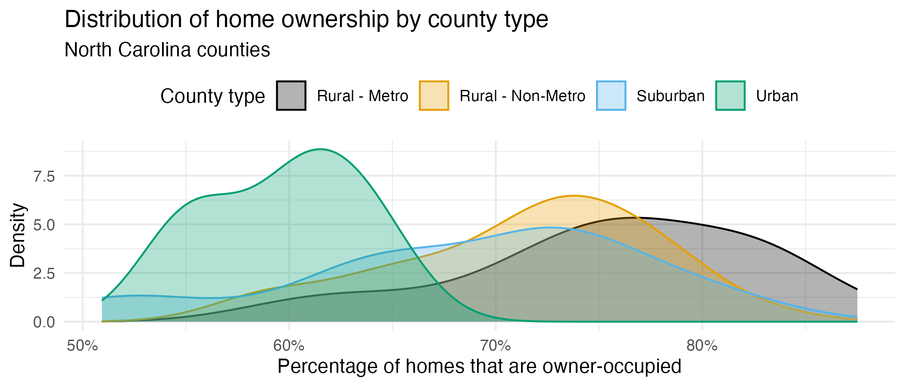

HW 1
Exploring Midwest and NC Counties
Introduction
This is a two-part homework assignment:
Part 1 – 🤖 Feedback from AI: Not graded, for practice, you get immediate feedback with AI, based on rubrics designed by the course instructor. Complete in
hw-1-part-1.qmd, no submission required.Part 2 – 🧑🏽🏫 Feedback from Humans: Graded, you get feedback from the course instructional team within a week. Complete in
hw-1-part-2.qmd, submit on Gradescope.
To get started, follow the instructions below.
- Go to https://cmgr.oit.duke.edu/containers and login with your Duke NetID and Password.
- Click
STA199under My reservations to log into your container. You should now see the RStudio environment. - Go to the course organization at github.com/sta199-s26 organization on GitHub. Click on the repo with the prefix hw-1. It contains the starter documents you need to complete the homework.
- Click on the green CODE button, select Use SSH. Click on the clipboard icon to copy the repo URL.
- In RStudio, go to File ➛ New Project ➛Version Control ➛ Git.
- Copy and paste the URL of your assignment repo into the dialog box Repository URL. Again, please make sure to have SSH highlighted under Clone when you copy the address.
- Click Create Project, and the files from your GitHub repo will be displayed in the Files pane in RStudio.
Guidelines
The guidelines should feel familiar, as they are the same ones from the lab! They are included below as a reminder.
Code
Code should follow the tidyverse style. Particularly,
- there should be spaces before and line breaks after each
+when building aggplot, - there should also be spaces before and line breaks after each
|>in a data transformation pipeline, - code should be properly indented,
- there should be spaces around
=signs and spaces after commas.
Additionally, all code should be visible in the PDF output, i.e., should not run off the page on the PDF. Long lines that run off the page should be split across multiple lines with line breaks.
Plots
- Plots should have an informative title and, if needed, also a subtitle.
- Axes and legends should be labeled with both the variable name and its units (if applicable).
- Careful consideration should be given to aesthetic choices.
Workflow
Continuing to develop a sound workflow for reproducible data analysis is important as you complete the lab and other assignments in this course.
- You should have at least 3 commits with meaningful commit messages by the end of the assignment.
- Final versions of both your
.qmdfile and the rendered PDF should be pushed to GitHub.
Part 1 – Feedback from AI
Your answers to the questions in this part should go in the file hw-1-part-1.qmd.
Instructions
Write your answer to each question in the appropriate section of the hw-1-part-1.qmd file. Then, highlight your answer to a question, click on Addins > AIFEEDR > Get feedback. In the app that opens, select the appropriate homework number (1) and question number. Then click on Get Feedback. Please be patient, feedback generation can take a few seconds. Once you read the feedback, you can go back to your Quarto document to improve your answer based on the feedback. You will then need to click the red X on the top left corner of the Viewer pane to stop the feedback app from running before you can re-render your Quarto document.
The video below demonstrates how to use the AI feedback tool.
Packages
In this part you will work with the tidyverse package, which is a collection of packages for doing data analysis in a “tidy” way.
Data
We will use the midwest data frame for this homework. It is part of the ggplot2 R package, so the midwest data set is automatically loaded when you load the tidyverse package.
The data contains demographic characteristics of counties in the Midwest region of the United States.
Because the data set is part of the ggplot2 package, you can read documentation for the data set, including variable definitions by typing ?midwest in the Console or searching for midwest in the Help pane.
Questions
Question 1
Visualize the distribution of population density of counties using a histogram with geom_histogram() with four separate binwidths: a binwidth of 100, a binwidth of 1,000, a binwidth of 10,000, and a binwidth of 100,000. For example, you can create the first plot with:
ggplot(midwest, aes(x = popdensity)) +
geom_histogram(binwidth = 100) +
labs(
x = "Population density",
y = "Count",
title = "Population density of Midwestern counties",
subtitle = "Binwidth = 100"
)You will need to make four different histograms. Make sure to set informative titles and axis labels for each of your plots. Then, comment on which binwidth is most appropriate for these data and why.
Render, commit, and push your changes to GitHub with the commit message “Added answer for Question 1”.
Make sure to commit and push all changed files so that your Git pane is empty afterward.
Question 2
Visualize the distribution of population density of counties again, this time using a boxplot with geom_boxplot(). Make sure to set informative titles and axis labels for your plot. Then, using information as needed from the box plot as well as the histogram from Question 1, describe the distribution of population density of counties and comment on any potential outliers, making sure to identify at least one county that is a clear outlier by name in your narrative and commenting on whether it makes sense to you that this county is an outlier. You can use the data viewer to identify the outliers interactively, you do not have to write code to identify them.
In describing a distribution, make sure to mention shape, center, spread, and any unusual observations.
Render, commit, and push your changes to GitHub with the commit message “Added answer for Question 2”.
Make sure to commit and push all changed files so that your Git pane is empty afterward.
Question 3
Create a scatterplot of the percentage below poverty (percbelowpoverty on the y-axis) versus percentage of people with a college degree (percollege on the x-axis), where the color and shape of points are determined by state. Make sure to set informative titles, axis, and legend labels for your plot. First, describe the overall relationship between percentage of people with a college degree and percentage below poverty in Midwestern states, making sure to identify at least one county that is a clear outlier by name in your narrative. You can use the data viewer to identify the outliers interactively, you do not have to write code to identify them. Then, comment on whether you can identify how this relationship varies across states.
In describing a relationship, make sure to mention direction, shape, and strength.
Render, commit, and push your changes to GitHub with the commit message “Added answer for Question 3”.
Make sure to commit and push all changed files so that your Git pane is empty afterward.
Question 4
Do some states have counties that tend to be geographically larger than others?
To explore this question, create side-by-side boxplots of area (area) of a county based on state (state).
How do typical county area sizes compare across states?
How do variabilities of county sizes compare across states?
Which state has the single largest county? Identify the name of this county. You can use the data viewer to identify it interactively, you do not have to write code.
Now is another good time to render, commit, and push your changes to GitHub with an informative and concise commit message.
Once again, make sure to commit and push all changed files so that your Git pane is empty afterwards.
Question 5
Do some states have a higher percentage of their counties located in a metropolitan area?
Create a segmented bar plot with one bar per state and the bar filled with colors according to the value of metro – one color indicating Yes and the other color indicating No for whether a county is considered to be a metro area. The y-axis of the segmented barplot should range from 0 to 1, indicating proportions. Compare the percentage of counties in metro areas across the states based on this plot. Make sure to supplement your narrative with rough estimates of these percentages.
For this question, you should begin with the data wrangling pipeline below. We will learn more about data wrangling in the coming weeks, so this is a mini-preview. This pipeline creates a new variable called metro based on the value of the existing variable called inmetro. If the value of inmetro is equal to 1 (inmetro == 1), it sets the value of metro to "Yes", and if not, it sets the value of metro to "No". The resulting data frame is assigned back to midwest, overwriting the existing midwest data frame with a version that includes the new metro variable.
Now is another good time to render, commit, and push your changes to GitHub with an informative and concise commit message.
And once again, make sure to commit and push all changed files so that your Git pane is empty afterward. We keep repeating this because it’s important and because we see students forget to do this. So take a moment to make sure you’re following along with the version control instructions.
Part 2 – Feedback from Humans
Your answers to the questions in this part should go in the file hw-1-part-2.qmd.
Question 6 – Reflection
In the first part of this homework assignment, you were given a set of data analysis questions. You used an AI-powered feedback tool to receive immediate feedback on your answers based on a rubric designed by the course instructor.
Write a short reflection (100-200 words, 5-10 sentences) addressing the following prompts:
Use of the tool: Describe how you interacted with the AI tool. What type of feedback did it provide on your code, your interpretation of results, or your written explanation? How did you respond to this feedback (e.g., revising code, clarifying your narrative)?
Quality of feedback: Evaluate the usefulness and clarity of the AI tool’s feedback. Did it help you identify errors, gaps in reasoning, or ways to improve communication of your results? Did the feedback align with your expectations of instructor-style feedback?
Critical reflection: What are the limitations of using AI-generated feedback in place of instructor feedback? How might it support your learning, and in what ways might it fall short?
Your reflection should demonstrate critical thinking, not just description. Where possible, connect your observations to course concepts such as reproducibility, clarity in communication, or the iterative nature of data analysis.
Render, commit, and push your changes to GitHub with the commit message “Added answer for Question 6”.
Make sure to commit and push all changed files so that your Git pane is empty afterward.
Questions 7-10 – Exploring NC Counties
Packages
You will use the tidyverse package for data wrangling and visualization, scales for better axis labels, and ggthemes for additional color palettes.
Data
For the remaining questions on the homework, you will continue use data on counties in North Carolina that you used in Lab 1.
As a reminder, the dataset contains information on North Carolina counties retrieved from the 2020 Census as well as from myFutureNC Dashboard maintained by Carolina Demography at the University of North Carolina at Chapel Hill.
This dataset is stored in a file called nc-county.csv in the data folder of your project/repository.
The variables in the dataset and their descriptions are as follows:
-
county: Name of county. -
land_area_m2: Land area of county in meters-squared, based on the 2020 census. -
land_area_mi2: Land area of county in miles-squared, based on the 2020 census. -
pop_2020: Population of county, based on the 2020 Census. -
pop_dens_2020: Population density calculated as population (pop_2020) divided by land area in miles-squared (people per mile-squared). -
county_type: Peer county type classification based on population characteristics, socioeconomic status, and geographic features used for grouping counties with similar demographic, social, and economic characteristics, allowing them to be compared and benchmarked against one another. -
median_hh_income: Median household income. -
p_foreign_born: Percentage of population that is foreign-born. -
p_child_poverty: Percentage of children living in poverty. -
p_single_parent_hh: Percentage of households with children that are single-parent households. -
p_broadband: Percentage of households with broadband internet access. -
p_home_ownership: Percentage of homes that are owner-occupied. -
p_family_sustaining_wage: Percentage of adults that earn a family-sustaining wage – typically a wage that covers essential costs like housing, food, childcare, transportation, and healthcare for a family’s basic needs within a specific geographic area -
p_edu_lths: Percentage of 25-44-year-olds with less than a high school diploma. -
p_edu_hsged: Percentage of 25-44-year-olds with a high school diploma or equivalent. -
p_edu_scnd: Percentage of 25-44-year-olds with some college or an associate degree. -
p_edu_ndc: Percentage of 25-44-year-olds with non-degree credentials – certifications, licenses, or other credentials that demonstrate specific skills or knowledge but do not confer a formal academic degree. -
p_edu_assoc: Percentage of 25-44-year-olds with an associate degree. -
p_edu_ba: Percentage of 25-44-year-olds with a bachelor’s degree. -
p_edu_mapl: Percentage of 25-44-year-olds with a master’s, professional, or doctoral degree. -
p_edu_hs_grad_rate: High school graduation rate. -
p_edu_chronic_absent_rate: Chronic absenteeism rate.
Just like in lab, you can read this file into R with the following code:
nc_county <- read_csv("data/nc-county.csv")Question 7
Make a bar plot of the number of counties by
county_type. What type of county is most common in North Carolina? What type of county is least common?What type of county is Durham County? Answer this question with a single pipeline where you
filter()for Durham County and thenselect()thecountyandcounty_typevariables.
Render, commit, and push your changes to GitHub with the commit message “Added answer for Question 7”.
Make sure to commit and push all changed files so that your Git pane is empty afterward.
Question 8
Make a boxplot of median household income (
median_hh_income) bycounty_type. In 2-3 sentences, compare the distributions of median household income across the four county types touching on shape, center, spread, and any potential outliers.-
In a single pipeline, identify all rural non-metro counties that appear as outliers in the boxplot you created in part (a). Your result should be a data frame with columns
county,county_type, andmedian_hh_income. (Hint: Usefilter()with two conditions connected by the&operator.)Then, fill in the blanks in the following sentence:
There are
_____rural non-metro counties that appear as outliers with median household incomes above $_____. The county with the highest median household income among these outliers is_____County, with a median household income of $_____.HintYou will need to use two conditions connected by the
&operator in yourfilter()call to filter for counties with rural non-metro type and (&) with median household income beyond a certain threshold. Figure out where the counties you identified in part (b) are located in North Carolina, e.g., on the coast, on the northwest, etc. Include in your answer where you found this information with links to your references, e.g., Wikipedia, Google Maps, etc.
Now is another good time to render, commit, and push your changes to GitHub with an informative and concise commit message.
Question 9
Make a boxplot of the proportion of 25-44-year-olds with a master’s, professional, or doctoral degree (
p_edu_mapl) bycounty_type. How do the median proportions compare across the four county types?-
In a single pipeline, identify all counties that appear as outliers in the boxplot you created in part (a). Your result should be a data frame with columns
county,county_type, andp_edu_mapl, where rows are ordered bycounty_typeand then in descending order ofp_edu_mapl.HintYou will need to use three conditions connected by the
|operator in yourfilter()call, one for each county type.
Render, commit, and push your changes to GitHub with an informative and concise commit message.
Question 10
Recreate the following visualization that compares the distribution of home ownership (p_home_ownership) by county_type. Then, highlight one feature of home ownership that this plot reveals in 1-2 sentences.

x-axis: You can modify the x-axis labels to be percentages in a
scale_x_continuous()layer. The scales package offers a handy function for formatting percentages,label_percent(). You can use this in thelabelsargument ofscale_x_continuous().Color palette: The
scale_color_colorblind()andscale_fill_colorblind()functions from the ggthemes package provide a color palette that is friendly for individuals with color vision deficiencies.Transparancy: You should adjust the transparency of the filled density curves. You don’t have to worry about the exact transparency value, but you should try a few to get close.
Theme: This plot uses a non-default theme. See theme options documentation for options.
Legend: You should move the legend to the top of the plot. You can do this in a
theme()layer. See theme documentation to identify the argument you need to change to move the legend.Aspect ratio: You can adjust the aspect ratio by setting the
fig-aspoption in the code cell. A smaller (closer to 0) value makes the plot shorter and wider, while a larger (closer to 1) value makes the plot square-ish.Width: You can also adjust the width of the plot by setting the
fig-widthoption in the code cell. A larger value makes the plot wider.
Render, commit, and push your changes to GitHub with an informative and concise commit message. Make sure to commit and push all changed files so that your Git pane is empty afterward.
Wrap-up
Before you wrap up the assignment, make sure that you render, commit, and push one final time so that the final versions of both your .qmd file and the rendered PDF are pushed to GitHub and your Git pane is empty. We will be checking these to make sure you have been practicing how to commit and push changes.
Submission
Submit your PDF document to Gradescope by the deadline to be considered “on time”:
- Go to http://www.gradescope.com and click Log in in the top right corner.
- Click School Credentials \(\rightarrow\) Duke NetID and log in using your NetID credentials.
- Click on your STA 199 course.
- Click on the assignment, and you’ll be prompted to submit it.
- Mark all the pages associated with question. All the pages of your homework should be associated with at least one question (i.e., should be “checked”).
Make sure you have:
- attempted all questions
- rendered your Quarto document
- committed and pushed everything to your GitHub repository such that the Git pane in RStudio is empty
- uploaded your PDF to Gradescope
Grading and feedback
Questions 1-5 are not graded, but you should complete them to get practice.
-
Questions 6-10 are graded, and you will receive feedback on Gradescope from the course instructional team within a week.
- Questions will be graded for accuracy and completeness.
- Partial credit will be given where appropriate.
- There are also workflow points for:
- committing at least three times as you work through your homework,
- having your final version of
.qmdand.pdffiles in your GitHub repository, and - overall organization.